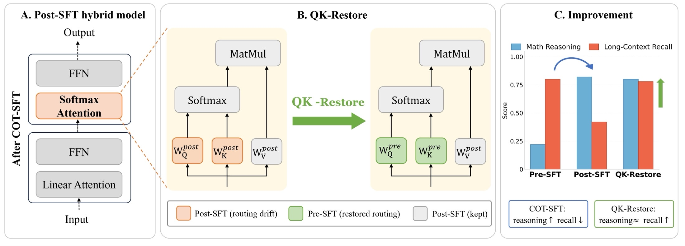

Long-context recall in hybrid language models
Attention Amnesia in Hybrid LLMs
When CoT Fine-Tuning Breaks Long-Range Recall,
and How to Fix It
LARK, HKUST(GZ) · UCL · Mistral AI · Tsinghua University · SUTD | EMNLP 2026
Fine-tuning teaches a hybrid model to reason.
It also teaches it to forget.
01 / The problem
Reasoning improves. Recall collapses.
Hybrid language models replace most softmax-attention layers with linear-attention ones and keep only a handful of full-attention layers. Those few retained layers carry the model’s global recall — the ability to find a fact that appeared a hundred thousand tokens ago.
Chain-of-thought supervised fine-tuning is the standard way to make such a model reason. It works: MATH500 accuracy on HypeNet-5B rises from 4.7 to 49.3. But measured on needle-in-a-haystack retrieval, the same fine-tuning is quietly destructive. HypeNet-9B falls from 67.2% to 9.4% on NIAH-Single-2 at a 256K context.

The post-training objective can overwrite the routing learned during pre-training.
02 / The cause
Local gradients, distant memories.
Let g(τ) be the average absolute loss gradient on attention logits — over positions, retained softmax layers and heads — for pairs of tokens τ apart. Under a stationary, reversible ergodic CoT-Markov model with bounded output gradients, it obeys an exponentially decaying bound:
The fitted decay window is short in absolute terms: W ≈ 41 tokens for the CoT post-SFT model, against ≈ 48 for the pre-SFT one. A signal that vanishes within tens of tokens cannot supervise routing that has to reach across hundreds of thousands.

03 / The method
Put the routing back.
Q and K decide where attention goes. V and O decide what it does with the tokens it attends to. If fine-tuning damages routing while improving processing, the two can be separated after the fact — the useful half of the update is kept, and the harmful half is reverted.

- Start from the post-SFT checkpoint.
- Copy WQ and WK from the pre-SFT checkpoint into every retained softmax-attention layer.
- Keep WV, WO, the linear-attention layers and the FFNs unchanged.
The same rule is applied to every retained softmax layer and head — there is no per-layer or per-head selection, and no hyperparameter to tune.
04 / The evidence
Recall comes back.
Reasoning mostly stays.
We evaluate four distilled hybrid models — Jet-Nemotron-2B and HypeNet-2B/5B/9B — on needle-in-a-haystack retrieval from 32K to 256K tokens, and on MATH500, GSM8K and AIME24 for reasoning. CoT-SFT uses Miromind.
HypeNet-2B, over CoT-SFT
HypeNet-9B, over CoT-SFT
HypeNet-5B, the cost
| Method | NIAH-Single-2 | NIAH-Single-3 | MATH500 | GSM8K | AIME24 | |||||||||
|---|---|---|---|---|---|---|---|---|---|---|---|---|---|---|
| 32K | 64K | 128K | 256K | 32K | 64K | 128K | 256K | Avg@16 | Maj@16 | Avg@16 | Maj@16 | Avg@16 | Maj@16 | |
| Jet-Nemotron-2B | ||||||||||||||
| Pre-SFT | 95.6 | 91.0 | 61.0 | 22.2 | 57.2 | 48.0 | 73.6 | 40.6 | 37.5 | 64.0 | 52.6 | 84.3 | 0.8 | 3.3 |
| + CoT-SFT | 57.8 | 28.4 | 21.0 | 11.6 | 34.4 | 33.6 | 67.2 | 27.8 | 49.4 | 70.6 | 71.9 | 88.0 | 1.5 | 3.3 |
| QK-Restore ours | 64.6 | 34.0 | 22.0 | 7.6 | 41.87.4↑ | 39.05.4↑ | 64.42.8↓ | 34.06.2↑ | 49.0 | 69.4 | 71.2 | 88.6 | 1.9 | 6.7 |
| HypeNet-2B | ||||||||||||||
| Pre-SFT | 75.8 | 94.0 | 88.0 | 56.2 | 48.8 | 34.8 | 30.4 | 23.4 | 4.7 | 25.4 | 2.2 | 20.0 | 0.0 | 0.0 |
| + CoT-SFT | 82.2 | 81.8 | 48.4 | 41.8 | 47.4 | 32.6 | 7.6 | 10.6 | 34.4 | 55.2 | 40.8 | 68.1 | 0.0 | 0.0 |
| QK-Restore ours | 97.6 | 91.2 | 83.2 | 40.8 | 56.28.8↑ | 52.820.2↑ | 30.823.2↑ | 30.219.6↑ | 33.7 | 56.6 | 41.2 | 69.0 | 0.2 | 3.3 |
| HypeNet-5B | ||||||||||||||
| Pre-SFT | 99.4 | 99.8 | 97.0 | 93.4 | 95.0 | 94.2 | 87.2 | 75.2 | 4.7 | 33.8 | 4.1 | 39.5 | 0.0 | 0.0 |
| + CoT-SFT | 98.8 | 100 | 91.4 | 83.6 | 96.6 | 96.6 | 90.6 | 65.4 | 49.3 | 67.0 | 61.3 | 81.4 | 0.6 | 0.0 |
| QK-Restore ours | 99.8 | 100 | 96.8 | 85.4 | 97.00.4↑ | 96.40.2↓ | 90.20.4↓ | 76.411.0↑ | 48.7 | 68.4 | 60.9 | 81.8 | 0.4 | 3.3 |
| HypeNet-9B | ||||||||||||||
| Pre-SFT | 64.2 | 95.8 | 72.4 | 67.2 | 53.0 | 95.0 | 83.8 | 52.0 | 17.6 | 57.6 | 15.3 | 62.4 | 0.8 | 6.7 |
| + CoT-SFT | 89.0 | 64.2 | 17.4 | 9.4 | 98.2 | 90.0 | 47.8 | 22.8 | 39.8 | 69.5 | 62.3 | 87.8 | 1.2 | 10.0 |
| QK-Restore ours | 92.6 | 100 | 44.0 | 19.6 | 98.60.4↑ | 97.07.0↑ | 66.418.6↑ | 42.619.8↑ | 37.6 | 68.4 | 59.3 | 88.4 | 0.6 | 3.3 |
Bold marks the best value within each model block. Superscripts on NIAH-Single-3 give the change against CoT-SFT. Avg@16 is the mean over 16 samples; Maj@16 the majority vote. (Paper Table 1.)
The damage is not a property of fine-tuning in general. Swap the chain-of-thought data for Tulu-3 instruction tuning, holding the models and contexts fixed, and recall improves instead of collapsing — so the chain-of-thought objective is the cause. QK-Restore tracks the fine-tuned model closely here too, ahead at the longest context on both models, and never worse on instruction following.
| Method | NIAH-Single-2 | NIAH-Single-3 | IFEval | ||||||
|---|---|---|---|---|---|---|---|---|---|
| 32K | 64K | 128K | 256K | 32K | 64K | 128K | 256K | ||
| HypeNet-5B | |||||||||
| Pre-SFT | 99.4 | 99.8 | 97.0 | 93.4 | 95.0 | 94.2 | 87.2 | 75.2 | 12.0 |
| + Tulu-3 SFT | 99.8 | 100 | 99.6 | 93.6 | 98.6 | 97.2 | 85.4 | 83.8 | 26.6 |
| QK-Restore ours | 99.6 | 100 | 99.8 | 93.4 | 97.4 | 95.2 | 85.4 | 85.2 | 26.6 |
| HypeNet-9B | |||||||||
| Pre-SFT | 64.2 | 95.8 | 72.4 | 67.2 | 53.0 | 95.0 | 83.8 | 52.0 | 14.0 |
| + Tulu-3 SFT | 86.4 | 97.8 | 88.2 | 78.4 | 96.2 | 96.8 | 95.8 | 86.8 | 27.2 |
| QK-Restore ours | 88.2 | 97.4 | 92.8 | 78.6 | 96.0 | 97.4 | 95.2 | 88.2 | 29.0 |
(Paper Table 2.)
Finally, why both projections? Restoring Q alone or K alone recovers less than restoring them together. Restoring V instead — the component that processes rather than routes — is clearly worse, which is what the routing account predicts. Freezing Q and K during fine-tuning also trails the post-hoc transplant.
| Variant | NIAH-Single-2 | NIAH-Single-3 | MATH500 Avg@16 | ||
|---|---|---|---|---|---|
| 64K | 128K | 64K | 128K | ||
| QK-Restore ours | 91.2 | 83.2 | 52.8 | 30.8 | 33.7 |
| QK-Pro (Procrustes) | 94.0 | 79.0 | 51.8 | 26.0 | 34.2 |
| Q only | 78.4 | 79.0 | 50.8 | 24.4 | 34.2 |
| K only | 90.4 | 71.6 | 46.2 | 13.2 | 34.2 |
| V only | 57.2 | 36.6 | 24.0 | 15.2 | 32.1 |
| Q/K frozen during SFT | 90.6 | 76.4 | 49.4 | 23.6 | 33.1 |
QK-Pro enforces the pre-SFT rotation while staying as close as possible to the post-SFT weights: it gains 0.5 points on MATH500 but loses 4.8 points of NIAH-Single-3 recall at 128K. (Paper Table 4.)
05 / Discussion
Adapt the processing. Preserve the routing.
Hybrid architectures concentrate a specific capability — long-range retrieval — in a small set of weights, and chain-of-thought fine-tuning does not know to leave them alone. Because the damage is localized, the repair can be localized too, and it costs nothing to apply.
Two caveats are worth stating plainly. QK-Restore needs the matched pre-SFT checkpoint, so it is available to whoever trained the model, not to a downstream user of the weights alone. And the repair is not free everywhere: on HypeNet-9B it gives up 2.2 points of MATH500 Avg@16 and 3.0 on GSM8K, against 0.6 and 0.4 on HypeNet-5B.
The broader question this leaves open is whether routing can be protected during fine-tuning rather than restored after it. Our frozen-Q/K ablation suggests the naive version of that is not enough.
A model that learns to think
should not have to forget where it read.
Citation
@article{zhou2026attention,
title={Attention Amnesia in Hybrid LLMs: When CoT Fine-Tuning Breaks Long-Range Recall, and How to Fix It},
author={Zhou, Xinyu and Zhu, Boyu and Xu, Yi and Li, Zhiwei and Chen, Yingfa and Wang, Huiming and Guo, Zhijiang},
journal={arXiv preprint arXiv:2606.11052},
year={2026}
}